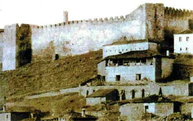

Κάστρο Φαναρίου
 Βυζαντινό κάστρο, κοντά στην Καρδίτσα και δίπλα στην ομηρική Ιθώμη, που χρονολογείται από την εποχή των Παλαιολόγων. Η θέση του επιλέχθηκε για να ελέγχει το πέρασμα που οδηγεί από την ¶ρτα στα στενά της Πόρτας (μέσω της Πίνδου). Το 1289 παραχωρήθηκε στην, ερειπωμένη σήμερα, μονή Λυκουσάδας από τον αυτοκράτορα Ανδρόνικο Β΄ Παλαιολόγο, ενώ από το 1393 το Φανάρι πέρασε στα χέρια των Οθωμανών. | ||